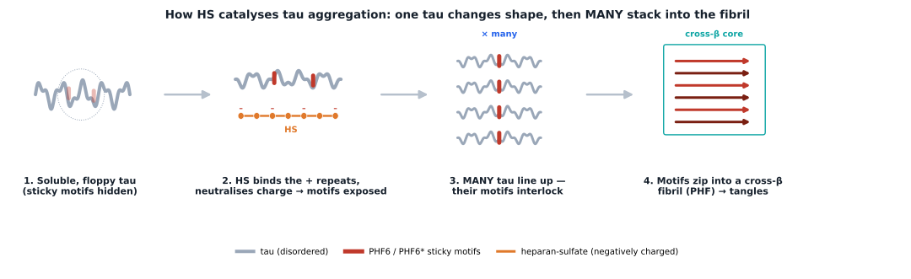
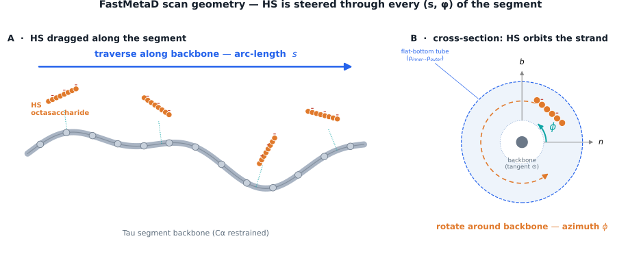
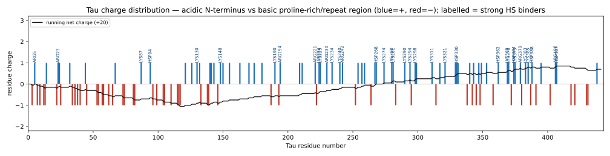
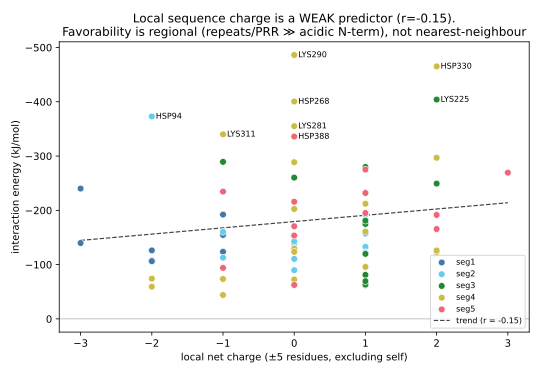
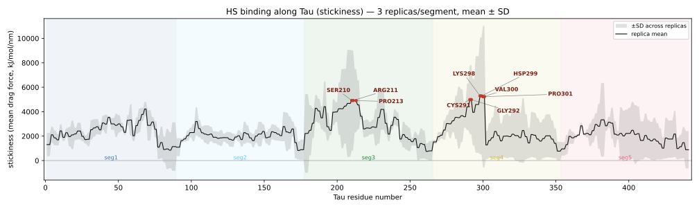
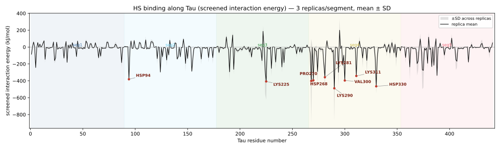
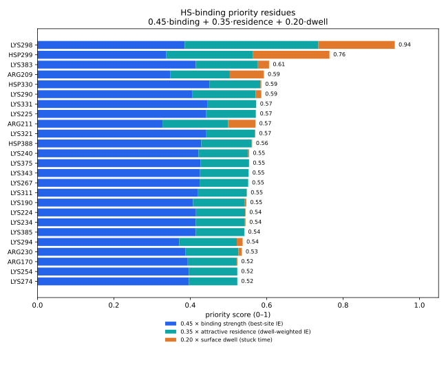
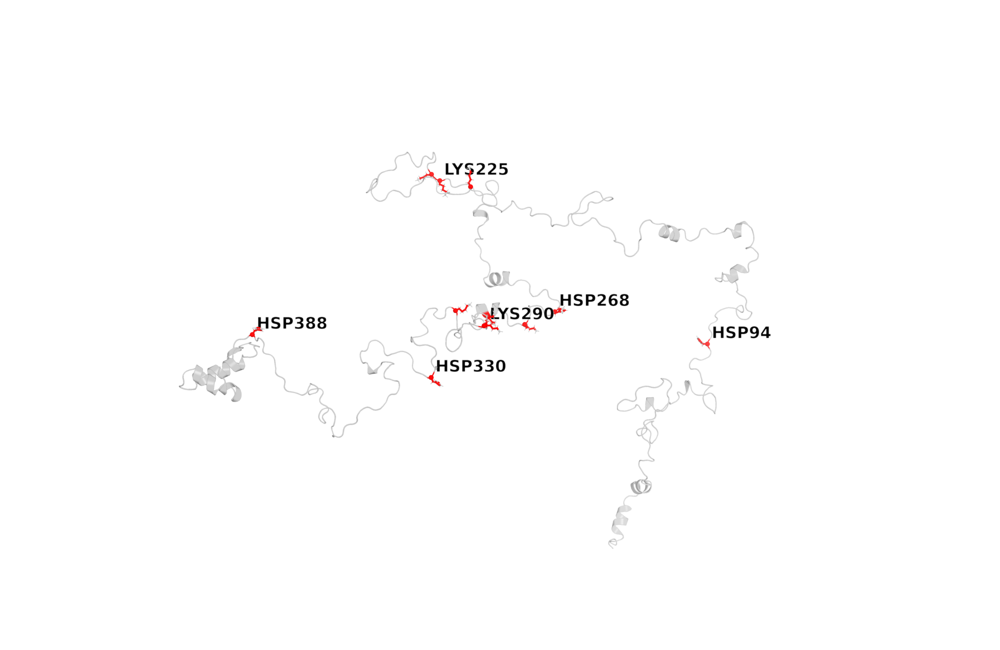

01Overview
Headline result and how to read it. Click any table header to sort.
The regions of tau, and where the literature says HS binds
02Why this matters — how HS drives tau aggregation
A plain-language primer on the disease mechanism behind this study, with the key papers.

What HS does
Tau is normally floppy and positively charged. HS/heparin is a long, heavily negatively-charged sugar; opposite charges stick, so HS neutralises tau's repulsive positive charge and acts as a cofactor scaffold that glues many tau molecules together to nucleate fibrils (Goedert 1996; Kampers 1996; the cofactor is even a structural part of the fibril — Fichou 2018). The same cell-surface sugars (HSPGs) are also the doorway that lets misfolded tau seeds enter neighbouring cells and spread the disease (Holmes 2013; Stopschinski 2018) — so blocking the tau–HS contact can reduce uptake and seeding (a therapeutic angle, and why mapping these residues matters).
Single tau, or many? → many
The β-sheet fibril is built by many tau molecules together, not one folding alone. A single tau is intrinsically disordered and even folds into a loose "paperclip" that hides its sticky segments (Jeganathan 2006). The process is two-step: first an individual monomer changes shape into a "seed-competent" state that exposes the hexapeptides PHF6 (³⁰⁶VQIVYK³¹¹) and PHF6* (²⁷⁵VQIINK²⁸⁰) (Mirbaha 2018); then strands from different tau molecules stack into an intermolecular "steric-zipper" cross-β spine (von Bergen 2000; Sawaya 2007). So the β-sheet is intermolecular.
03Method & scan geometry
The HS octasaccharide is dragged along the backbone (arc-length s) while rotating around it (azimuth φ), with all Cα restrained — so every face of every residue is sampled.

Simulation design
| Segment | Residues | Reps | IE reps | Coverage | Sim time |
|---|---|---|---|---|---|
| seg1 | 1–89 | 3 | 3 | 92.2% | 33.9 ns |
| seg2 | 90–177 | 3 | 3 | 96.5% | 30.7 ns |
| seg3 | 178–265 | 3 | 3 | 94.5% | 36.6 ns |
| seg4 | 266–353 | 3 | 3 | 79.7% | 38.4 ns |
| seg5 | 354–441 | 3 | 3 | 80.8% | 30.4 ns |
Two readouts + screened energetics
Stickiness = visit-weighted steering force per (s,φ) cell. Interaction energy = per-residue tau–HS energy: NBFIX LJ (clash-capped) + screened electrostatics (HS + condensed Na⁺ + first-shell water per frame, since the bare protein+HS slice is ~−29 e and unscreened Coulomb overstates the interaction).
04Charge composition — and why only some basics bind
Tau carries 70 positive and 56 negative residues (net +14). Are all positives equally favored? No.


Why favorability varies — regionally
Local sequence charge is a weak predictor (r = -0.142): it is not simply "a lysine next to other lysines." The effect is regional — HS (a polyanion) is attracted to the basic proline-rich/repeat block and repelled from the acidic N-terminal projection domain. Mean interaction energy of basic residues by region:
| Segment | Region | Mean basic IE (kJ/mol) |
|---|---|---|
| seg1 | N-terminal acidic | -151.3 |
| seg2 | N-term / PRR1 | -150.1 |
| seg3 | PRR2 | -179.8 |
| seg4 | Repeats R1–R3 | -206.4 |
| seg5 | R4 / C-terminal | -199.6 |
Repeats (seg4) bind strongest; the acidic N-terminus weakest. Per-residue variation also reflects 3D side-chain exposure, counterion screening, and incomplete sampling.
05Stickiness along Tau
Where the HS octasaccharide resists being dragged — replica mean ± SD.

06Interaction energy
Screened, clash-capped per-residue tau–HS interaction energy. Most negative = strongest. Sortable.

Strongest HS-binding residues (by interaction energy)
| Residue | Seg | SS | IE total | elec | LJ | dwell (ps) | reps |
|---|---|---|---|---|---|---|---|
| LYS290 | seg4 | C | -489 ± 390 | -485 | -4 | 330 | 3 |
| HSP330 | seg4 | C | -465 ± 86 | -79 | -386 | 58 | 3 |
| LYS225 | seg3 | C | -408 ± 218 | -404 | -3 | 26 | 3 |
| HSP268 | seg4 | C | -402 ± 499 | -412 | 10 | 0 | 3 |
| VAL300 | seg4 | C | -396 ± 24 | -9 | -387 | 1460 | 3 |
| PRO270 | seg4 | C | -394 ± 9 | -8 | -387 | 0 | 3 |
| HSP94 | seg2 | C | -381 ± 48 | -106 | -276 | 0 | 3 |
| LYS281 | seg4 | H | -358 ± 138 | -356 | -1 | 135 | 3 |
| LYS311 | seg4 | C | -342 ± 60 | -340 | -2 | 6 | 3 |
| HSP388 | seg5 | C | -336 ± 46 | -126 | -211 | 49 | 3 |
| LYS294 | seg4 | C | -299 ± 162 | -296 | -3 | 338 | 3 |
| GLN124 | seg2 | H | -296 ± 10 | -20 | -276 | 0 | 3 |
| LYS190 | seg3 | C | -294 ± 95 | -291 | -2 | 109 | 3 |
| LYS274 | seg4 | C | -290 ± 154 | -286 | -5 | 0 | 3 |
| PRO154 | seg2 | C | -287 ± 12 | -11 | -276 | 0 | 3 |
| LYS224 | seg3 | C | -281 ± 277 | -282 | 1 | 26 | 3 |
| LYS375 | seg5 | C | -276 ± 204 | -273 | -3 | 1 | 3 |
| HSP374 | seg5 | C | -270 ± 228 | -267 | -3 | 0 | 3 |
| ARG194 | seg3 | C | -264 ± 58 | -261 | -3 | 60 | 3 |
| ARG230 | seg3 | C | -253 ± 92 | -250 | -2 | 194 | 3 |
07Priority residues
A composite score to prioritize residues, combining best-pose binding, dwell-weighted residence, and surface dwell.
+ 0.35 × attractive residence (dwell-time-weighted, signed IE)
+ 0.20 × surface dwell (total stuck time on the tau surface)
each component min–max normalized to [0,1] across residues

Ranked priority list
| # | Residue | Seg | SS | Priority | Binding (0.45) | Residence (0.35) | Dwell (0.20) | Best-site IE |
|---|---|---|---|---|---|---|---|---|
| 1 | LYS298 ✓lit | seg4 | C | 0.935 | 0.86 | 1.00 | 1.00 | -1791 |
| 2 | HSP299 | seg4 | C | 0.764 | 0.75 | 0.65 | 1.00 | -1570 |
| 3 | LYS383 | seg5 | C | 0.606 | 0.92 | 0.46 | 0.15 | -1922 |
| 4 | ARG209 ✓lit | seg3 | C | 0.590 | 0.77 | 0.44 | 0.45 | -1619 |
| 5 | HSP330 | seg4 | C | 0.586 | 1.00 | 0.38 | 0.01 | -2083 |
| 6 | LYS290 ✓lit | seg4 | C | 0.586 | 0.90 | 0.47 | 0.07 | -1883 |
| 7 | LYS331 ✓lit | seg4 | C | 0.572 | 0.99 | 0.36 | 0.00 | -2063 |
| 8 | LYS225 | seg3 | C | 0.572 | 0.98 | 0.37 | 0.01 | -2045 |
| 9 | LYS321 | seg4 | C | 0.570 | 0.98 | 0.36 | 0.00 | -2047 |
| 10 | ARG211 ✓lit | seg3 | C | 0.569 | 0.73 | 0.49 | 0.36 | -1528 |
| 11 | HSP388 | seg5 | C | 0.562 | 0.95 | 0.37 | 0.01 | -1987 |
| 12 | LYS240 ✓lit | seg3 | H | 0.554 | 0.94 | 0.37 | 0.01 | -1953 |
| 13 | LYS375 | seg5 | C | 0.553 | 0.95 | 0.36 | 0.00 | -1978 |
| 14 | LYS343 | seg4 | H | 0.552 | 0.95 | 0.36 | 0.00 | -1973 |
| 15 | LYS267 ✓lit | seg4 | C | 0.551 | 0.94 | 0.36 | 0.00 | -1968 |
| 16 | LYS311 ✓lit | seg4 | C | 0.548 | 0.93 | 0.36 | 0.00 | -1949 |
| 17 | LYS190 | seg3 | C | 0.546 | 0.90 | 0.38 | 0.02 | -1889 |
| 18 | LYS224 ✓lit | seg3 | C | 0.544 | 0.92 | 0.37 | 0.01 | -1924 |
| 19 | LYS234 | seg3 | H | 0.544 | 0.92 | 0.37 | 0.01 | -1921 |
| 20 | LYS385 | seg5 | C | 0.541 | 0.92 | 0.36 | 0.00 | -1922 |
| 21 | LYS294 ✓lit | seg4 | C | 0.537 | 0.82 | 0.43 | 0.08 | -1725 |
| 22 | ARG230 ✓lit | seg3 | C | 0.535 | 0.86 | 0.39 | 0.04 | -1801 |
| 23 | ARG170 | seg2 | C | 0.523 | 0.87 | 0.36 | 0.01 | -1827 |
| 24 | LYS254 ✓lit | seg3 | H | 0.523 | 0.88 | 0.36 | 0.00 | -1839 |
| 25 | LYS274 | seg4 | C | 0.523 | 0.88 | 0.36 | 0.00 | -1840 |
08Structure map
Tau cartoon (helices = springs) with the top basic HS binders as red sticks; labels carry leader arrows.

09Literature comparison
Residue-level benchmark: what each study reports as the tau heparin/HS binding determinants. Sortable; click a study for the paper.
Region-level binding map — did we predict the right regions?
For each tau region: our predicted binding (top-25 hotspots + mean basic interaction energy) vs the literature, with the papers (and DOIs) that report HS binding there. 5 of 5 literature binding regions are reproduced.
| Tau region | Our hotspots | Mean basic IE | We predict | Literature | Papers reporting binding (DOI) | Agreement |
|---|---|---|---|---|---|---|
| N-terminal projection 1–150 | none | -155 | Moderate | Not a primary site | Sibille 2006 10.1021/bi060964o | ⚠ We predict; lit weak/none |
| Proline-rich (PRR1+PRR2) 151–243 | 9 in top-25 ARG209, LYS225, ARG211, LYS240 | -189 | Strong | Primary | Murray 2022 10.3390/biom12111573 Sibille 2006 10.1021/bi060964o | ✓ Agree — predicted |
| R1 (244–274) 244–274 | 3 in top-25 LYS267, LYS254, LYS274 | -161 | Strong | Contributing | Zhao 2017 10.1016/j.bpj.2017.02.011 Zhu/Liang 2010 10.1074/jbc.M109.035691 Goedert 1996 10.1038/383550a0 | ✓ Agree — predicted |
| R2 · PHF6* (275–305) 275–305 | 4 in top-25 LYS298, HSP299, LYS290, LYS294 | -277 | Strong | Primary | Mukrasch 2005 10.1074/jbc.M501565200 Zhao 2017 10.1016/j.bpj.2017.02.011 Murray 2022 10.3390/biom12111573 Zhang 2019 10.7554/eLife.43584 | ✓ Agree — predicted |
| R3 · PHF6 (306–336) 306–336 | 4 in top-25 HSP330, LYS331, LYS321, LYS311 | -224 | Strong | Primary | Mukrasch 2005 10.1074/jbc.M501565200 Zhao 2017 10.1016/j.bpj.2017.02.011 Zhang 2019 10.7554/eLife.43584 | ✓ Agree — predicted |
| R4 (337–368) 337–368 | 1 in top-25 LYS343 | -99 | Moderate | Secondary | Zhao 2017 10.1016/j.bpj.2017.02.011 | ✓ Agree — predicted |
| C-terminal 369–441 | 4 in top-25 LYS383, HSP388, LYS375, LYS385 | -197 | Strong | Not reported (monomer) | — (no monomer site) | ⚠ We predict; lit weak/none |
What each study reports (residue lists)
| Study | Method | # res | Reported binding residues (2N4R) | Regions |
|---|---|---|---|---|
| Goedert 1996 | in vitro assembly, EM | 0 | region-level only | Repeat region R1–R4 (244–372) |
| Mukrasch 2005 | NMR HSQC (K18/K19) | 11 | V275 I277 I278 K280 K281 L282 D283 L284 V306 Y310 K311 | PHF6* (275–280), PHF6 (306–311) |
| Sibille 2006 | NMR (full-length 2N4R) | 0 | region-level only | R2, R3; basic regions flanking MTBR (~224–240); N-term upstream of inserts |
| Zhu/Liang 2010 | ITC/SLS (Tau244–372) | 0 | region-level only | Repeat domain (244–372) |
| Zhao 2017 | NMR HSQC (K18/K19) | 19 | I277 I278 K280 K281 L282 D283 V306 Y310 K311 K254 K257 K267 H268 K290 K294 K298 H329 K331 H362 | R2 (275–283), R3 (306–311) + basic/His clusters |
| Zhang 2019 | cryo-EM filament cores | 7 | K281 L282 Y310 K311 S320 C322 S324 | Ordered core 272–330 (R1-end → R3) |
| Stopschinski 2018 | GAG panels, uptake | 0 | region-level only | Repeat-domain surface (GAG-side study) |
| Murray 2022 | NMR HSQC (PRR2*/R2* peptides) | 14 | R209 S210 R211 T212 L215 R221 K224 R230 K240 R242 I278 K281 L282 D283 | PRR2 (198–243), R2 (275–280) |
Residue-by-residue match (our top 25 vs the literature)
Each residue in our top-25 prediction or reported by any study, with match status and the citing paper(s) + DOI. Sortable.
Of the 22 literature-only residues, only 8 are basic (Lys/Arg/His⁺ — i.e. genuine binder candidates we rank below top 25: LYS281 (#33), ARG221 (#37), HSP268 (#45), HSP329 (#48), LYS280 (#51), LYS257 (#53), ARG242 (#59), HSP362 (#60)); the rest are neutral/acidic CSP-perturbed neighbours (Ser/Thr/Leu/Tyr/Asp) reported by NMR, not binding residues. Residue badge colour shows type.
| Residue | Region | Our rank | Best-site IE | Match status | Reference (DOI) |
|---|---|---|---|---|---|
| LYS298 | R2 · PHF6* 275–280 | #1 | -1791 | Matched | Zhao 2017 10.1016/j.bpj.2017.02.011 |
| ARG209 | Proline-rich (PRR1+2) | #4 | -1619 | Matched | Murray 2022 10.3390/biom12111573 |
| LYS290 | R2 · PHF6* 275–280 | #6 | -1883 | Matched | Zhao 2017 10.1016/j.bpj.2017.02.011 |
| LYS331 | R3 · PHF6 306–311 | #7 | -2063 | Matched | Zhao 2017 10.1016/j.bpj.2017.02.011 |
| ARG211 | Proline-rich (PRR1+2) | #10 | -1528 | Matched | Murray 2022 10.3390/biom12111573 |
| LYS240 | Proline-rich (PRR1+2) | #12 | -1953 | Matched | Murray 2022 10.3390/biom12111573 |
| LYS267 | R1 | #15 | -1968 | Matched | Zhao 2017 10.1016/j.bpj.2017.02.011 |
| LYS311 | R3 · PHF6 306–311 | #16 | -1949 | Matched | Mukrasch 2005 10.1074/jbc.M501565200 Zhao 2017 10.1016/j.bpj.2017.02.011 Zhang 2019 10.7554/eLife.43584 |
| LYS224 | Proline-rich (PRR1+2) | #18 | -1924 | Matched | Murray 2022 10.3390/biom12111573 |
| LYS294 | R2 · PHF6* 275–280 | #21 | -1725 | Matched | Zhao 2017 10.1016/j.bpj.2017.02.011 |
| ARG230 | Proline-rich (PRR1+2) | #22 | -1801 | Matched | Murray 2022 10.3390/biom12111573 |
| LYS254 | R1 | #24 | -1839 | Matched | Zhao 2017 10.1016/j.bpj.2017.02.011 |
| HSP299 | R2 · PHF6* 275–280 | #2 | -1570 | Near (lit LYS298) | — |
| HSP330 | R3 · PHF6 306–311 | #5 | -2083 | Near (lit HSP329) | — |
| LYS225 | Proline-rich (PRR1+2) | #8 | -2045 | Near (lit LYS224) | — |
| LYS321 | R3 · PHF6 306–311 | #9 | -2047 | Near (lit SER320) | — |
| LYS274 | R1 | #25 | -1840 | Near (lit VAL275) | — |
| LYS383 | C-terminal | #3 | -1922 | Predicted-only | — |
| HSP388 | C-terminal | #11 | -1987 | Predicted-only | — |
| LYS375 | C-terminal | #13 | -1978 | Predicted-only | — |
| LYS343 | R4 | #14 | -1973 | Predicted-only | — |
| LYS190 | Proline-rich (PRR1+2) | #17 | -1889 | Predicted-only | — |
| LYS234 | Proline-rich (PRR1+2) | #19 | -1921 | Predicted-only | — |
| LYS385 | C-terminal | #20 | -1922 | Predicted-only | — |
| ARG170 | Proline-rich (PRR1+2) | #23 | -1827 | Predicted-only | — |
| LYS281 | R2 · PHF6* 275–280 | #33 | -1682 | Literature-only | Mukrasch 2005 10.1074/jbc.M501565200 Zhao 2017 10.1016/j.bpj.2017.02.011 Zhang 2019 10.7554/eLife.43584 Murray 2022 10.3390/biom12111573 |
| ARG221 | Proline-rich (PRR1+2) | #37 | -1729 | Literature-only | Murray 2022 10.3390/biom12111573 |
| HSP268 | R1 | #45 | -1676 | Literature-only | Zhao 2017 10.1016/j.bpj.2017.02.011 |
| HSP329 | R3 · PHF6 306–311 | #48 | -1620 | Literature-only | Zhao 2017 10.1016/j.bpj.2017.02.011 |
| LYS280 | R2 · PHF6* 275–280 | #51 | -1590 | Literature-only | Mukrasch 2005 10.1074/jbc.M501565200 Zhao 2017 10.1016/j.bpj.2017.02.011 |
| LYS257 | R1 | #53 | -1602 | Literature-only | Zhao 2017 10.1016/j.bpj.2017.02.011 |
| ARG242 | Proline-rich (PRR1+2) | #59 | -1513 | Literature-only | Murray 2022 10.3390/biom12111573 |
| HSP362 | R4 | #60 | -1490 | Literature-only | Zhao 2017 10.1016/j.bpj.2017.02.011 |
| SER210 | Proline-rich (PRR1+2) | #91 | -272 | Literature-only | Murray 2022 10.3390/biom12111573 |
| SER324 | R3 · PHF6 306–311 | #134 | -411 | Literature-only | Zhang 2019 10.7554/eLife.43584 |
| SER320 | R3 · PHF6 306–311 | #148 | -391 | Literature-only | Zhang 2019 10.7554/eLife.43584 |
| THR212 | Proline-rich (PRR1+2) | #158 | -274 | Literature-only | Murray 2022 10.3390/biom12111573 |
| TYR310 | R3 · PHF6 306–311 | #162 | -374 | Literature-only | Mukrasch 2005 10.1074/jbc.M501565200 Zhao 2017 10.1016/j.bpj.2017.02.011 Zhang 2019 10.7554/eLife.43584 |
| CYS322 | R3 · PHF6 306–311 | #186 | -346 | Literature-only | Zhang 2019 10.7554/eLife.43584 |
| VAL275 | R2 · PHF6* 275–280 | #193 | -332 | Literature-only | Mukrasch 2005 10.1074/jbc.M501565200 |
| LEU215 | Proline-rich (PRR1+2) | #202 | -270 | Literature-only | Murray 2022 10.3390/biom12111573 |
| ILE277 | R2 · PHF6* 275–280 | #222 | -323 | Literature-only | Mukrasch 2005 10.1074/jbc.M501565200 Zhao 2017 10.1016/j.bpj.2017.02.011 |
| ILE278 | R2 · PHF6* 275–280 | #233 | -315 | Literature-only | Mukrasch 2005 10.1074/jbc.M501565200 Zhao 2017 10.1016/j.bpj.2017.02.011 Murray 2022 10.3390/biom12111573 |
| LEU282 | R2 · PHF6* 275–280 | #234 | -285 | Literature-only | Mukrasch 2005 10.1074/jbc.M501565200 Zhao 2017 10.1016/j.bpj.2017.02.011 Zhang 2019 10.7554/eLife.43584 Murray 2022 10.3390/biom12111573 |
| LEU284 | R2 · PHF6* 275–280 | #295 | -226 | Literature-only | Mukrasch 2005 10.1074/jbc.M501565200 |
| ASP283 | R2 · PHF6* 275–280 | #411 | -175 | Literature-only | Mukrasch 2005 10.1074/jbc.M501565200 Zhao 2017 10.1016/j.bpj.2017.02.011 Murray 2022 10.3390/biom12111573 |
| VAL306 | R3 · PHF6 306–311 | #425 | -180 | Literature-only | Mukrasch 2005 10.1074/jbc.M501565200 Zhao 2017 10.1016/j.bpj.2017.02.011 |
10References
DOIs verified via web search. Author lists for Zhu/Liang 2010 and Murray 2022 should be confirmed on PubMed before formal citation.
- Goedert M et al.. Assembly of microtubule-associated protein tau into Alzheimer-like filaments induced by sulphated glycosaminoglycans. Nature 383:550–553 (1996). doi:10.1038/383550a0
- Mukrasch MD et al.. Sites of tau important for aggregation populate β-structure and bind to microtubules and polyanions. J. Biol. Chem. 280:24978–24986 (2005). doi:10.1074/jbc.M501565200
- Sibille N et al.. Structural impact of heparin binding to full-length tau as studied by NMR spectroscopy. Biochemistry 45:12560–12572 (2006). doi:10.1021/bi060964o
- Zhu H-L, Fernández C, Fan J-B, Shewmaker F, Chen J, Minton AP, Liang Y. Quantitative characterization of heparin binding to Tau protein: implication for inducer-mediated Tau filament formation. J. Biol. Chem. 285:3592–3599 (2010). doi:10.1074/jbc.M109.035691
- Zhao J et al.. Glycan determinants of heparin–tau interaction. Biophys. J. 112:921–932 (2017). doi:10.1016/j.bpj.2017.02.011
- Zhang W, Scheres SHW et al.. Heparin-induced tau filaments are polymorphic and differ from those in Alzheimer's and Pick's diseases. eLife 8:e43584 (2019). doi:10.7554/eLife.43584
- Stopschinski BE et al.. Specific GAG (heparan sulfate) sulfation and length requirements for tau internalization. J. Biol. Chem. 293:10826–10840 (2018). doi:10.1074/jbc.M117.792697
- Murray A, Yan L, Gibson JM, Liu J, Eliezer D, Lippens G, Zhang F, Linhardt RJ, Zhao J, Wang C. Proline-Rich Region II (PRR2) plays an important role in tau–glycan interaction: an NMR study. Biomolecules 12:1573 (2022). doi:10.3390/biom12111573
- Kampers T et al.. RNA stimulates aggregation of microtubule-associated protein tau into Alzheimer-like paired helical filaments. FEBS Lett. 399:344–349 (1996). doi:10.1016/S0014-5793(96)01386-5
- von Bergen M et al.. Assembly of tau protein into Alzheimer paired helical filaments depends on a local sequence motif (306-VQIVYK-311). PNAS 97:5129–5134 (2000). doi:10.1073/pnas.97.10.5129
- Jeganathan S et al.. Global hairpin folding of tau in solution. Biochemistry 45:2283–2293 (2006). doi:10.1021/bi0521543
- Sawaya MR et al.. Atomic structures of amyloid cross-β spines reveal varied steric zippers. Nature 447:453–457 (2007). doi:10.1038/nature05695
- Holmes BB et al.. Heparan sulfate proteoglycans mediate internalization and propagation of specific proteopathic seeds. PNAS 110:E3138–E3147 (2013). doi:10.1073/pnas.1301440110
- Mirbaha H et al.. Inert and seed-competent tau monomers suggest structural origins of aggregation. eLife 7:e36584 (2018). doi:10.7554/eLife.36584
- Fichou Y et al.. Cofactors are essential constituents of stable and seeding-active tau fibrils. PNAS 115:13234–13239 (2018). doi:10.1073/pnas.1810058115